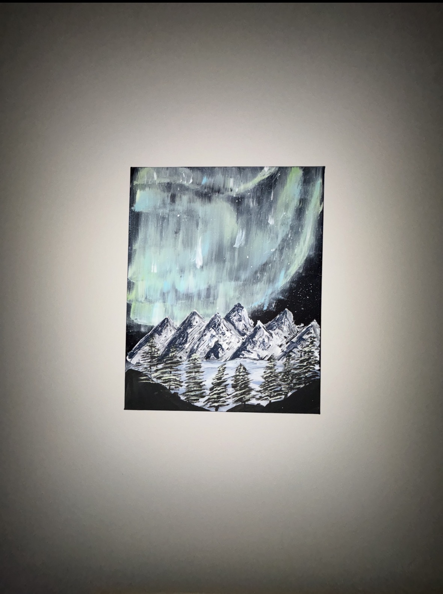
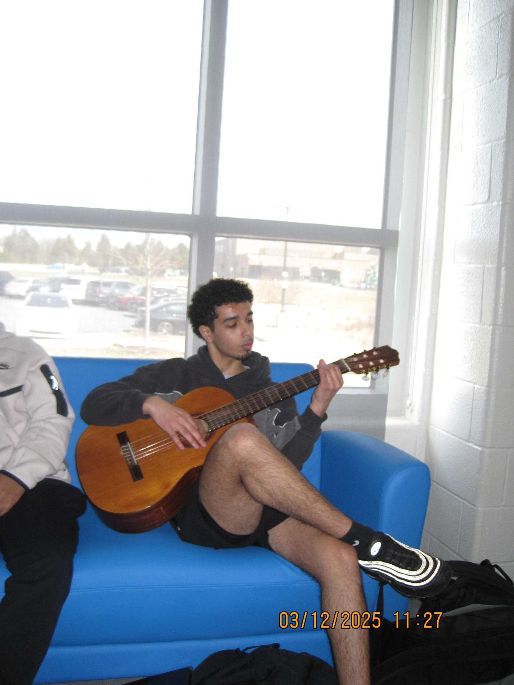

Hobbies

Creating & Designing
I enjoy bringing ideas to life through creativity, whether it's painting detailed artwork like my painting of the mountains in Alaska with Northern Light. Creating allows me to think beyond limits and turn imagination into something tangible.

Playing Guitar
I am self-taught in guitar and enjoy learning songs that challenge my skills and creativity. One of my favorite songs I’ve learned to play is Sparks, which pushed me to develop better control and precision. Through consistent practice, I’ve learned techniques such as barre chords, finger positioning, and smooth chord transitions. Playing guitar has strengthened my patience, discipline, and ability to learn independently.

Singing & Choir
I have a strong passion for singing and have been actively involved in choir. It has helped me build confidence, collaboration skills, and the ability to perform while expressing creativity through music.